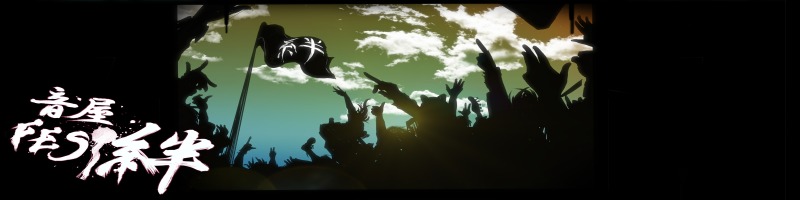

|
今回、イベントに御参加頂いたサイト様よりインタビュー対談にも御協力を していただいた方々のインタビュー模様を音源、テキストで公開していきます。 通話に使用しているツールがSkypeという事もあり音声受信が不安定になったり ノイズが乗っていたりと少しお聞き苦しい点もあるかと思いますが楽しんでいただければと思います。 公開音源についてはかなり大幅なカットを施しているサイト様がほとんどです（汗） 本音としてはノーカットで全てのトークをお披露目したいところではあるのですが 長すぎるとファイルの容量がファンキーな事になる上、コアな内容のお話だと ちょっと分からないといった方も出てきてしまうかと思われますので御了承下さい。 |
| WEB WAVE LIB×煉獄庭園（しまだありこ×煉獄小僧） |
|
明るいトーンのお声が魅力のしまだサンはとても話し易い御方でした。 楽曲製作陣とは違い効果音製作の目線から素材サイトについての御見解を頂きました。 途中、しまだサンの携帯が唸りを上げますがソコはスルーでお願いします（笑） お忙しい中本当にどうも有難う御座いました！！ |
| FICUSEL×煉獄庭園（VaLSe×煉獄小僧） |
|
Skype環境をお持ちではないとの事で今回は残念ながらメールによる質疑応答になりましたが 繊細かつ表現性豊かなVaLSeサンの内側を少しでも知る事が出来て ファンの方もきっと楽しんでいただけるんじゃないでしょうか。 お忙しい中本当にどうも有難う御座いました！！ |
| 夢幻のオルゴール工房×煉獄庭園（夢幻×煉獄小僧） |
|
イメージ通り落ち着いた雰囲気が何とも癒される夢幻サン。 収録時間が随分遅い時間だった事もあり囁きトークとなっております（笑） トーク中、一部にピー音…が無かったので爆発音などを入れております。 お忙しい中本当にどうも有難う御座いました！！ |
| *CAMeLIA*×煉獄庭園（Mary×煉獄小僧） |
|
秋山サンに憧れ御自身も素材屋の運営を開始されたMaryサン。 色々と楽しいお話をお伺いさせていただく事が出来ました。 *CAMeLIA*ファンの方々は是非とも要チェックですぞ♪ お忙しい中本当にどうも有難う御座いました！！ |
| TAM Music Factory×煉獄庭園（多夢×煉獄小僧） |
|
音系素材界にこの人あり！と言うべき大御所の多夢サンです。 無理を言っての出演交渉にも御快諾頂き、尚且つ当初予定にはなかった 絆テーマの新曲参加までしていただき非常に光栄な限りです。 お忙しい中本当にどうも有難う御座いました！！ |
| Senses Circuit×煉獄庭園（hitoshi×煉獄小僧） |
|
とても明るく面白い御人だったものでついつい話の枝を拾っては 共通質問に関係ない脱線トークをしまくってしまいました（笑） そのせいで超大幅なカットが！hitoshiさんサーセン！！ お忙しい中本当にどうも有難う御座いました！！ |
| 魔王魂×煉獄庭園（KOUICHI×煉獄小僧） |
|
天才だという事が発覚した魔王魂のKOUICHIサンです（笑） 非常にマルチでありつつどんな事もその持ち前のセンスでハイクオリティーな 作品にしてしまえる才能が実にうらやましい！少し下さい！！ お忙しい中本当にどうも有難う御座いました！！ |
| On-Jin〜音人〜×煉獄庭園（笠畑栄樹×煉獄小僧） |
|
こちらも効果音サイトの超大手様、On-Jin〜音人〜サンです。 効果音作りのアレコレやサイト運営についてなど色々と 貴重なお話を聞かせていただいております♪ お忙しい中本当にどうも有難う御座いました！！ |
| Amor Kana×煉獄庭園（音羽雪×煉獄小僧） |
|
コレまた有名処のAmor Kana、音羽雪サンで御座います。 最初はサイトの方にメアドが置かれておらず「連絡取れねぇ！」と 焦ったものですが無事連絡も取れ参加にも御快諾頂けました！YEAH！ お忙しい中本当にどうも有難う御座いました！！ |
| 時の迷い人×煉獄庭園（秋野ると×煉獄小僧） |
|
独特な雰囲気が魅力の時の迷い人、秋野るとサンです。 光闇世界の六道サンや緑茶の音のふみこみどりサンとはサクラ仲間だそうで その辺りについてもお話をお伺いさせていただきました。 お忙しい中本当にどうも有難う御座いました！！ |
| Rulin×煉獄庭園（笹原那太×煉獄小僧） |
|
皆さんから「え？女性ですか？」と勘違いされてしまう程 中性的ヴォイスが魅力の笹原サンで御座います。男性です（笑） 声活動の面についても色々とお伺いさせていただきました。 お忙しい中本当にどうも有難う御座いました！！ |
| 遠来未来×煉獄庭園（逆凪諒×煉獄小僧） |
|
こちらもMIDI時代から大変有名なサイトですね♪遠来未来の逆凪サンです。 インタビュー内容でも少し触れてますがいつかモンハン御一緒しましょうね！ 音楽面、サイト面について色々と貴重なお話を聞かせていただきました。 お忙しい中本当にどうも有難う御座いました！！ |
| あおいとりのうた×煉獄庭園（音々×煉獄小僧） |
|
透き通るような楽曲に定評のあるあおいとりのうた、音々サンです。 ニコニコ動画では音々Pとしてもご活躍されていらっしゃいます。 バンドでドラムやってたっていうのが超意外でした（笑） お忙しい中本当にどうも有難う御座いました！！ |
| H/MIX GALLERY×煉獄庭園（秋山裕和×煉獄小僧） |
|
コレまた超有名な大手さん、H/MIX GALLERYの秋山サンです。 グッと引き込まれる世界観の楽曲から素晴らしいデザインの サイト面まで色々と貴重なお話をお伺いさせていただきました。 お忙しい中本当にどうも有難う御座いました！！ |
| メロスピ神×煉獄庭園（東瑠利子×煉獄小僧） |
|
専門ジャンルとしてメタル属性に特化した素材サイトさん。 メタル色の素材サイトとしてはこちらも老舗のメロスピ神、東瑠利子サンです。 お忙しい中本当にどうも有難う御座いました！！ |
| ３１０４式×煉獄庭園（サイレフォ×煉獄小僧） |
|
唸るユーロ、躍動のトランスと言えばこのサイトでしょう。 ３１０４式のサイレフォさんで御座います。 色々と貴重なお話をお伺いさせていただきました。 お忙しい中本当にどうも有難う御座いました！！ |
| 光闇世界-モノクロ-×煉獄庭園（六道迅×煉獄小僧） |
|
ソフトタッチなサウンドからヘヴィー系まで幅広い 楽曲を取り扱われていらっしゃる光闇世界-モノクロ-の六道サンです。 一足先に生配信にてお披露目されたイケメンヴォイス此処に光臨！ お忙しい中本当にどうも有難う御座いました！！ |
| MusMus×煉獄庭園（Watson×煉獄小僧） |
|
打ち込みの技術も楽曲のセンスも半端じゃないです。 こちらも大手のMusMus、Watsonサンです。 意外な情報なども聞けて実に楽しい一時でした。 お忙しい中本当にどうも有難う御座いました！！ |
| OUpS.zero×煉獄庭園（↑だ×煉獄小僧） |
|
HNの命名がしくった！と最近お嘆きのOUpS.zero、↑だサンです（笑） でもとってもユニークなお名前だと思いますよ♪ 収録時の音声の乱れが原因で聞き取り辛い部分があり申し訳ないです。 お忙しい中本当にどうも有難う御座いました！！ |
| 音楽工房夢見月×煉獄庭園（umineko×煉獄小僧） |
|
続いては音楽工房 夢見月のuminekoサンで御座います。 イベント開催初日、生配信の方で乱入出演したワンちゃんの 話もトーク中、頂いておりました（笑） お忙しい中本当にどうも有難う御座いました！！ |
| 緑茶の音×煉獄庭園（ふみこみどり×煉獄小僧） |
|
和風ナンバーが好評の緑茶の音、ふみこみどりサンで御座います。 実はふみこサンは先日、御出産をなされました。 もっと早く分かっていれば最初の対談時から秋山サンと合わせて お祝いのメッセージを頂きたかったんですが（汗）おめでとう御座います！ お忙しい中本当にどうも有難う御座いました！！ |
| 龍的交響楽×煉獄庭園（ジンファ×煉獄小僧） |
|
オーケストラアレンジの楽曲が印象的な龍的交響楽、ジンファさん。 対談の中でも仰られておりましたが民族、中華好きとの事で 今後は中華を基盤とした＋αのスパイスを取り入れた新曲も 沢山出てくるのでは！？楽しみですねぇ〜♪ お忙しい中本当にどうも有難う御座いました！！ |
| Remair×煉獄庭園（Yuht×煉獄小僧） |
|
落ち着いた雰囲気で安心感のあるサウンドが素敵なRemair、Yuhtサンです。 楽曲作りやサイト運営についてはもちろんの事 カメラで写真撮影をされてらっしゃる部分についてもお伺いしました。 お忙しい中本当にどうも有難う御座いました！！ |
| SARAPURI×煉獄庭園（大貫貴人×煉獄小僧） |
|
元「BGMの小箱」を運営されていらっしゃったSARAPURIの大貫サンです。 当時から今でも安らぎのある楽曲は癒しやリラックスを与えてくれます。 しかしサイト名の由来がまさかアレだったとは（笑） お忙しい中本当にどうも有難う御座いました！！ |
| 音の葉っぱ×煉獄庭園（ユーカリの木×煉獄小僧） |
|
続きましては「音の葉っぱ」のユーカリの木サンです。 共通質問については御本人の希望で無回答扱いとなっており 削っている項目が多かったので少しアッサリした内容になってますが 是非是非、御覧頂ければなと思います。 お忙しい中本当にどうも有難う御座いました！！ |
| Nerve-雑音空間-×煉獄庭園（草薙考司×煉獄小僧） |
|
続きましては皆さんお待ちかねの「Nerve-雑音空間-」草薙サンです。 僕にとっては草薙サンも自分が運営開始した当初から 憧れを持っていた御方のお一人でしたのでこうして直接お話を させていただけて本当に光栄でした、俺って幸せ者だぜゲヘヘ♪ お忙しい中本当にどうも有難う御座いました！！ |
| SILVER TECHNOLOGY×煉獄庭園（ASK×煉獄小僧） |
|
「SILVER TECHNOLOGY」のASKサンで御座います。 テクノ、ユーロ、トランス、ハードコア、レイヴなどなど サイバー且つノリノリな楽曲がとっても魅力的です。 お忙しい中本当にどうも有難う御座いました！！ |
| 音楽の卵×煉獄庭園（takai×煉獄小僧） |
|
お次は「音楽の卵」略しておんたまのtakaiサンです。 幅広い楽曲表現で聴く者に幸せを与えてくれます。 色々と貴重なお話を聞かせていただきました。 お忙しい中本当にどうも有難う御座いました！！ |
| Hagall×煉獄庭園（Rai×煉獄小僧） |
|
続きまして「Hagall」のRaiサンで御座います。 とても綺麗で繊細な楽曲作りをされていらっしゃいます。 他サイト様との交流についてもお伺いさせていただきました。 お忙しい中本当にどうも有難う御座いました！！ |
| あしなが☆おにいさん×煉獄庭園（NICE☆GUY×煉獄小僧） |
|
ラストは「あしなが☆おにいさん」のNICE☆GUYサンです。 サイト名からどんなサイトなのだろうと興味をそそられますが 楽曲の方も独創性溢れる素晴らしいラインナップです。 お忙しい中本当にどうも有難う御座いました！！ |
| PANICPUMPKIN×煉獄庭園（みそか×煉獄小僧） |
|
何と急遽PANICPUMPKINのみそかサンもインタビュー参戦！ という事で真のラストはこの方に飾っていただきましょう♪ 8bitサウンドがとても魅力的な楽曲作りをされてらっしゃいます。 お忙しい中本当にどうも有難う御座いました！！ |